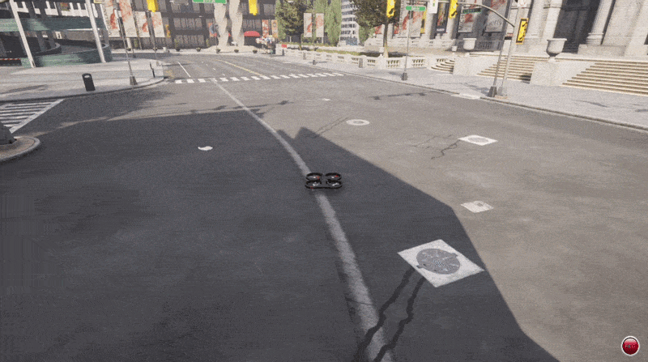

无人机终端键盘遥控器
drone_teleop 是一个纯终端的无人机键盘遥控器，用于通过键盘遥控 CarlaAir / AirSim 仿真环境中的多旋翼无人机，无需图形界面。代码位于 src/air/air_teleop/drone_teleop.py。
运行效果如下图所示：

通信原理
遥控器与仿真器之间采用 客户端-服务器 模式通信：
- 服务端：AirSim 仿真器内置的 RPC（远程过程调用）服务，默认监听
127.0.0.1:41451端口； - 客户端：脚本通过
airsim.MultirotorClient连接 RPC 服务，调用confirmConnection()完成握手确认。
指令与状态的具体交互流程如下：
- 速度指令下发：主循环以 10 Hz 的频率，在机体坐标系（Body Frame）下调用
moveByVelocityBodyFrameAsync周期性下发速度指令，并传入偏航角速度（YawMode(is_rate=True)）。指令采用异步方式下发，不阻塞控制循环；每条指令的持续时间设为控制周期的 2 倍，保证相邻指令之间不断档。 - 按键松开即归零：每个控制周期都会重新扫描当前按住的按键集合，重新计算三轴速度。因此松开按键后，对应轴的速度在下一个周期自动归零。
- 状态回读：以 5 Hz 的频率调用
getMultirotorState读取kinematics_estimated（位置与线速度），换算成相对起飞点的高度后，在终端上用单行 HUD 原地刷新显示。 - 安全机制：
- 看门狗：若控制循环停顿超过 0.5 s，自动触发悬停保底；
- 安全退出：收到退出信号（ESC 或 Ctrl+C）后，依次执行悬停 → 降落 → 切断电机（
armDisarm(False)）→ 释放 API 控制权，并还原终端属性。
注意： AirSim 使用 NED 坐标系（x 前、y 右、z 指向地面），因此上升对应 vz < 0，下降对应 vz > 0。
按键读取采用跨平台方案：Windows 下使用 msvcrt 无缓冲读取按键，Linux / macOS 下使用 termios + select 切换终端模式后读取。
按键映射表
| 按键 | 功能 | 指令说明 |
|---|---|---|
W / S |
前进 / 后退 | 机体 x 轴 ±3.0 m/s |
A / D |
左移 / 右移 | 机体 y 轴 ±3.0 m/s |
Space |
上升 | NED 下 vz = -2.0 m/s |
Ctrl+P |
下降 | NED 下 vz = +2.0 m/s（终端无法单独捕获 Shift 修饰键） |
J / L |
原地左偏航 / 右偏航 | 偏航角速度 ±30 度/秒 |
T |
起飞 | 解锁电机并爬升到安全高度 |
G |
降落 | 先悬停再垂直降落 |
H |
紧急悬停 | 三轴速度立即归零，原地保持高度 |
ESC |
安全退出 | 悬停 → 降落 → 释放控制权 |
提示：
- 起飞前请先按
T解锁电机； - 按键松开后对应轴速度自动归零；
- 紧急悬停后，按任意方向键（
W/A/S/D、J/L、Space、Ctrl+P）即可解除悬停继续操控； Ctrl+C与ESC一样走安全退出流程。
启动命令
前置条件： 已启动模拟器并完成与 AirSim 的连接（参见建立虚拟机和空域载具之间的连接），且已安装 airsim Python 包。
# 拉取仓库并进入仓库根目录
git clone https://github.com/OpenHUTB/ros2.git
cd ros2
# 安装无人机运行所需依赖（如未安装）
pip install -r src/requirements.txt
# 启动遥控器
python src/air/air_teleop/drone_teleop.py如需连接非本机的仿真器，可通过命令行参数指定：
python src/air/air_teleop/drone_teleop.py --ip 172.21.108.47 --port 41451 --vehicle ""| 参数 | 默认值 | 说明 |
|---|---|---|
--ip |
127.0.0.1 |
AirSim 服务地址 |
--port |
41451 |
AirSim RPC 端口 |
--vehicle |
空字符串 | 载具名称，默认取仿真器中的第一架无人机 |